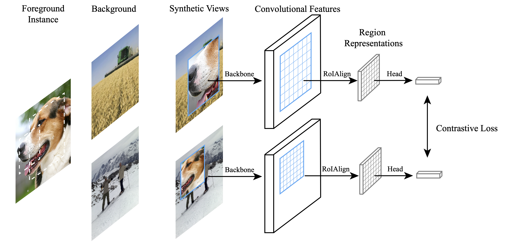
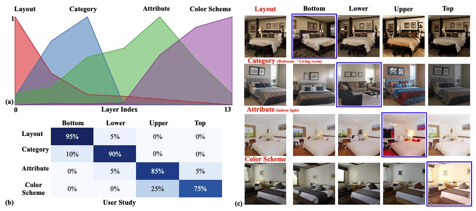

|
Ceyuan Yang PhD Student Department of Information Engineering The Chinese University of Hong Kong E-mail / Google Scholar / Twitter / Github |

|
Biography
Ceyuan Yang is a second-year Ph.D student at Multimedia lab (MMLAB), Department of Information Engineering in The Chinese University of Hong Kong, advised by Prof. Bolei Zhou. He is very interested in representation learning, video understanding and generative models.Before that, He received the B. Eng degree from Honors College in Northwestern Polytechnical University in 2018. From 2017 to 2018, He did an internship in Sensetime Group Limited with Dr. Zhe Wang and Dr. Jianping Shi. He also spent one year from 2018 to 2019 as a research assistant at MMLAB with Prof. Dahua Lin. Currently, He works very closely with Prof. Bo Dai and Dr. Zhirong Wu.
News
- [03/2021] Two papers to appear in CVPR'2021.
- [12/2020] Our HiGAN is finally accepted by IJCV at the end of 2020!!
- [10/2020] Our extended InterFaceGAN is accepted by T-PAMI.
- [09/2020] We release GenForce, an efficient PyTorch library for deep generative modeling.
- [07/2020] One paper to appear in ECCV'2020.
- [04/2020] HiGAN (short) to appear in AI for Content Creation Workshop, CVPR 2020.
- [02/2020] One paper to appear in CVPR'2020.
- [03/2019] One paper to appear in CVPR'2019.
- [06/2018] Two papers to appear in ECCV'2018.
Selected Publications [Full list]

|
Data-Efficient Instance Generation from Instance Discrimination,
|
|  |
Instance Localization for Self-supervised Detection Pretraining,
|
|  |
Semantic Hierarchy Emerges in Deep Generative Representations for Scene Synthesis,
|

|
Unsupervised Landmark Learning from Unpaired Data,
|

|
Video Representation Learning with Visual Tempo Consistency,
|

|
Temporal Pyramid Network for Action Recognition,
|

|
Pose Guided Human Video Generation,
|
Professional activities
- Conference Reviewer for CVPR, ICCV, ECCV, AAAI, WACV.